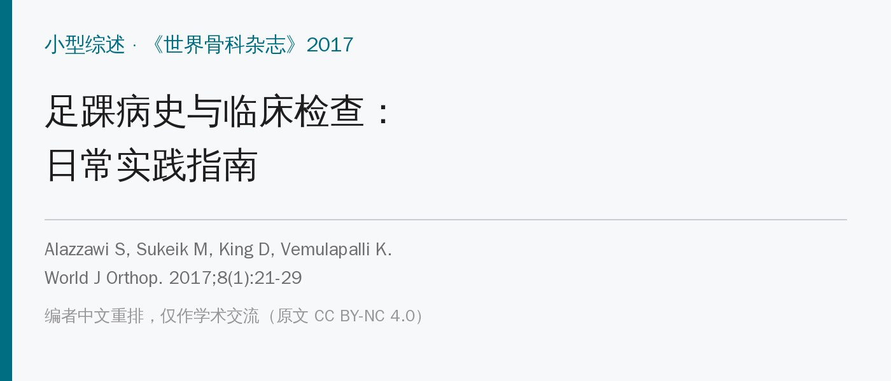
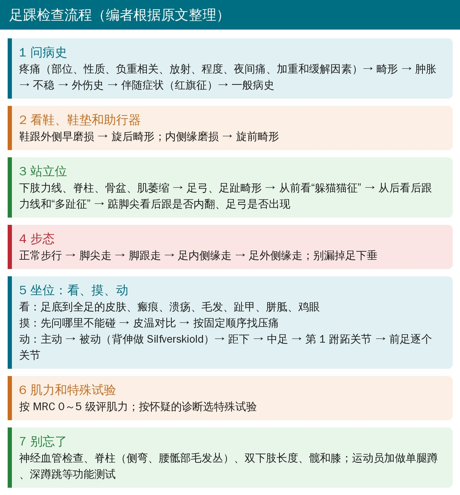
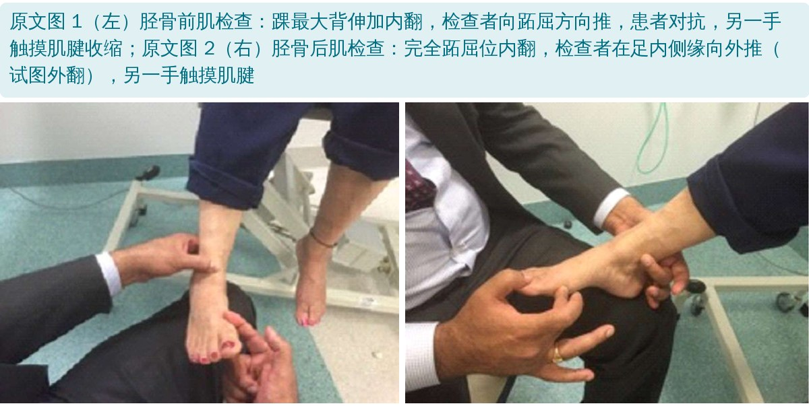
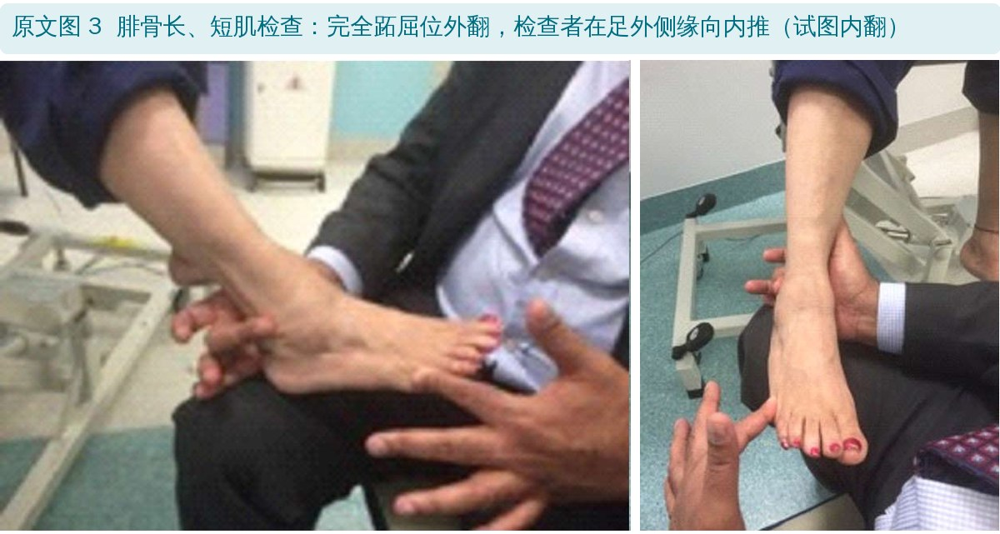
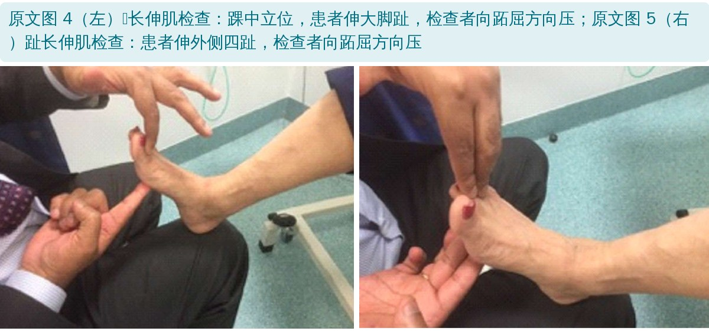
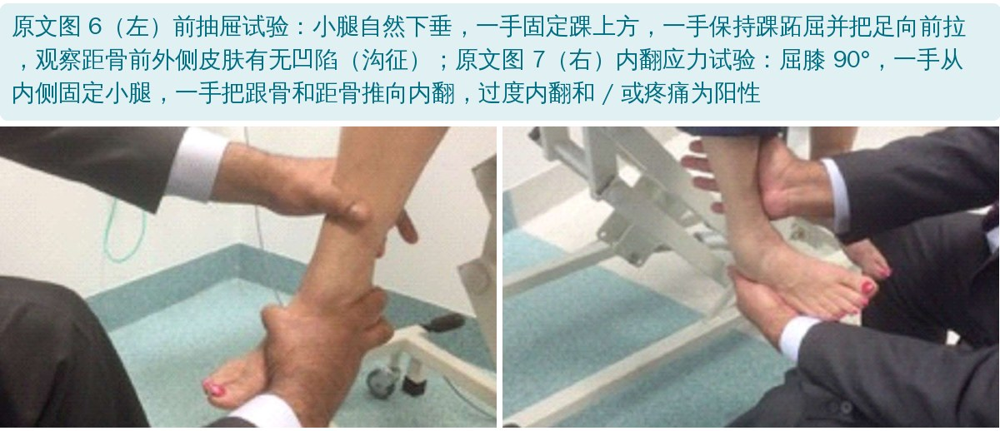
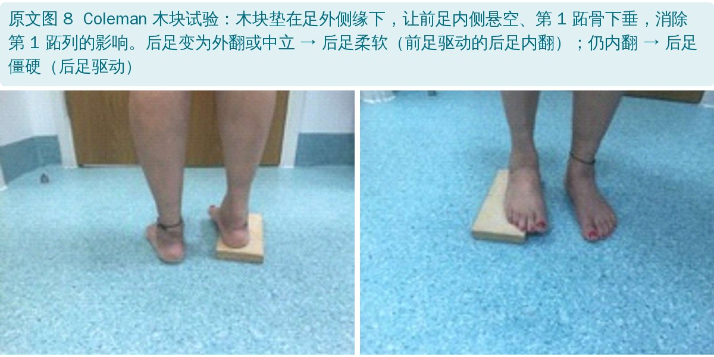
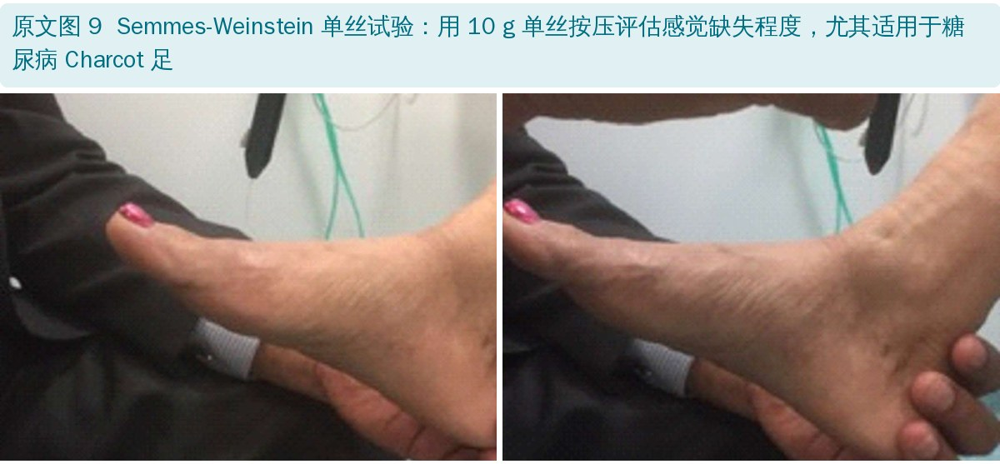
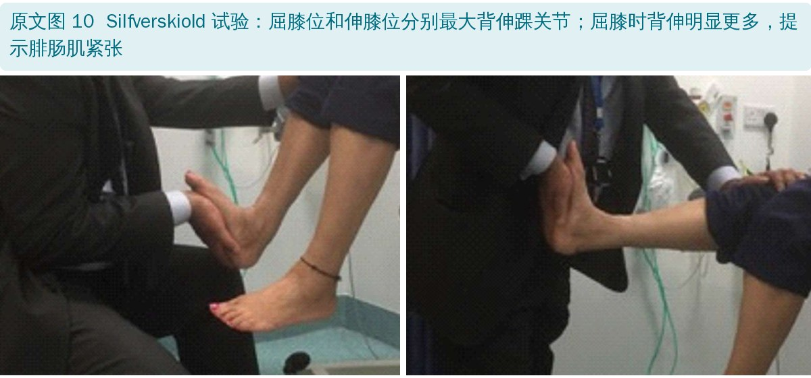

🔖原文信息（编者中文重排）
📚 文献信息
▪ Alazzawi S, Sukeik M, King D, Vemulapalli K. Foot and ankle history and clinical examination: A guide to everyday practice. World J Orthop. 2017;8(1):21-29. doi:10.5312/wjo.v8.i1.21
▪ 作者来自英国伦敦皇家医院、皇家国立骨科医院等创伤骨科
▪ 文章类型：小型综述（特邀稿），写给准备专科考试的住院医师、全科医生，以及所有要处理成人足踝问题的医生
足踝问题在基层和专科门诊都很常见，但很多医生觉得难查。原因很简单：每只脚有 26 块骨、33 个关节、100 多条韧带、肌腱和肌肉，一个人可能同时有好几处问题。跑步时足要承受 3～4 倍体重。
作者的观点是：病史问到位、检查按顺序做，大部分诊断在拍片之前就能有方向，影像只是用来证实临床上已经怀疑的东西。还有一个小建议：对新患者或诊断未明确的患者，看病人前先别翻以前的病历，带着“新眼光”更不容易被先入为主。
这不是研究，而是作者根据教科书、综述和高年资作者的临床经验整理出的一套检查顺序：病史 → 鞋和辅具 → 站立位 → 步态 → 坐位看、摸、动 → 肌力和特殊试验 → 神经血管、脊柱、髋膝 → 功能测试。全文 10 张表把各个环节对应的内容列了出来，10 张图是检查手法的照片。

🔖足踝检查流程（编者根据原文整理）
患者来足踝门诊，最常见的原因是：疼痛、肿胀、畸形、僵硬、不稳和 / 或步态异常。
• 疼痛弥散时，找出最不舒服的区域 / 一侧，再对照下表的解剖部位
• 再问：性质（锐痛、钝痛、烧灼痛）、是否与负重有关（退变、应力性骨折、足底筋膜炎等炎症）、放射（向脚趾或向小腿）、程度（0～10）、是否影响活动、是否夜间痛醒、晨起痛还是夜间痛、病程、持续还是间歇
• 加重因素（步行距离、平地还是不平路面、上下楼梯、和鞋的关系）和缓解因素（休息、止痛药、喜欢穿什么鞋）
• 病程长、疼痛重时，想到中枢敏化：睡眠不足、抑郁都会推动中枢敏化；最后别忘了问患者自己怎么看待这只脚的疼痛
| 疼痛部位 | 常见的可能病变 |
|---|---|
| 前踝痛 | 退行性病变；撞击；踝关节囊损伤（如踝关节极度跖屈时的运动损伤） |
| 内踝下方痛 | 跗骨窦综合征；距下关节退变；中关节面跗骨联合；弹簧韧带或三角韧带病变；胫骨后肌病变或内侧撞击 |
| 后内侧痛 | 胫骨后肌腱炎；𧿹长屈肌（病变）；跗管综合征 |
| 后侧痛 | 跟腱病；后踝撞击；三角骨病变 |
| 后外侧痛 | 腓骨肌腱（病变） |
| 外侧痛 | 腓骨远端应力性骨折；ATFL 损伤；外侧撞击；跗骨窦综合征；距下关节病变；跟骨骨折畸形愈合 |
| 足跟痛 | 足底筋膜炎；跟骨应力性骨折；足底外侧神经第一支卡压；脂肪垫萎缩 / 挫伤；跗管综合征；异物反应；足底筋膜断裂 |
| 中足痛 | 退行性病变；创伤后关节炎；跗骨应力性骨折；韧带损伤，如 Lisfranc 损伤；腓骨短肌止点腱病 |
| 前足痛 | 跖骨痛；Morton 神经病；应力性骨折；Freiberg 病；跖趾关节滑膜炎；趾甲病变 |
| 前足痛：大脚趾 | 拇外翻 / 拇僵硬；拇囊炎症；籽骨炎；籽骨骨折 |
| 前足痛：第 2～4 趾 | 爪形趾；锤状趾；槌状趾 |
| 前足痛：小趾 | 小趾囊炎症 |
原文表 1：疼痛的解剖部位与可能病因的对应（中文翻译）
原表注：ATFL，下胫腓前韧带（编者注：此缩写原文有误，见后文“原文里对不上的地方”）。
• 畸形：多久了、谁先发现、在哪、是否在进展，是否伴皮肤溃疡、疼痛、反复感染、鞋磨得快，还是只是外观问题
• 肿胀：局部还是整条腿、单侧还是双侧、和活动有没有关系、频率和持续时间。双侧全足踝弥漫肿胀多是全身问题（心、肾）；只在踝关节周围多与胫距关节有关（退变、炎性关节病）；局部肿胀多是局部病变：腓骨远端前方肿 → 韧带慢性损伤，后方肿 → 腓骨肌腱病变；急性肿胀伴或不伴中足畸形，要想到 Charcot 神经关节病
• 不稳：第一次崴脚是什么时候、多久一次、什么情况下诱发
• 外伤史：当时的症状和处理，手术、注射、感染的时间和细节
• 红旗征：夜间盗汗、发热、体重下降 → 感染或肿瘤；麻木、无力、烧灼感 → 多为脊柱问题或周围神经病
| 一般病史中不能漏的要点 |
|---|
| 年龄 |
| 职业 |
| 运动参与 |
| 腰痛史 |
| 其他关节问题（如髋、膝） |
| 糖尿病 |
| 周围神经病 |
| 周围血管病 |
| 炎性关节病 |
| 类风湿关节炎 |
| 血管炎 |
原文表 2：采集病史时不能遗漏的要点（中文翻译）
检查从见到患者第一眼就开始了：怎么走进来，有没有用助行器。患者最好穿短裤、赤脚，必要时请陪护在场。
• 普通鞋还是矫形鞋；正常的磨损一般在鞋跟外侧
• 鞋外侧、近端和中部过早磨损 → 旋后畸形；内侧缘磨损 → 旋前畸形；完全没磨损，可能只是新鞋
• 看有没有矫形器、助行器；看鞋垫，问患者哪种鞋垫舒服、哪种会痛
• 让患者站起来，先看整个下肢力线，特别是膝内翻、外翻；看脊柱有无侧弯、骨盆是否倾斜，大腿和小腿有无肌萎缩
• 从侧面看足弓（高弓足还是扁平足）、肿胀、瘢痕；看大脚趾畸形（拇外翻、趾间拇外翻、拇内翻）和外侧足趾畸形（槌状趾、锤状趾、爪形趾）
• “躲猫猫”征：正常从正前方看不到内侧的足跟垫；如果能看到，提示高弓足。要两侧对比，足跟垫特别大或明显跖骨内收会造成假阳性
• 从后面看后跟有没有骨性突起（如跟骨隆起），正常后跟力线是中立的
• “多趾”征：正常从后面只能看到第 5、4 趾；如果还能看到第 3 趾，甚至第 2 趾，提示跟骨外翻角增大
• 踮脚尖：两侧后跟都应转为内翻，说明距下关节活动正常；扁平足的人踮脚时如果出现内侧足弓，就是柔软性扁平足
• 先问能不能不扶东西走，老年人和站不稳的人要随时准备扶
• 让患者按平时的样子走，从前面和后面看肩和骨盆是否倾斜；再看髋、膝运动、首次触地、三个滚轴、步长、步频和有无减痛步态
• 然后依次：脚尖走 → 脚跟走 → 足内侧缘走 → 足外侧缘走，对照下面两张表；别漏掉足下垂
| 步行方式 | 评估的内容 |
|---|---|
| 脚尖走 | 踝关节灵活性；后踝撞击；跟腱 / 胫骨后肌功能；中足功能；跖趾关节问题；（应力性）骨折；S1/S2 功能 |
| 脚跟走 | 踝关节活动度；前踝撞击；胫骨前肌功能；L4/L5；𧿹长伸肌 / 趾长伸肌功能；足底筋膜炎 / 足跟问题 |
| 足内侧缘（内翻）/ 外侧缘（外翻）走 | 距下关节活动度；胫骨后肌功能；腓骨肌腱功能；第 5 跖列问题；内、外侧沟撞击；第 1 跖列问题 |
原文表 3：不同步行方式与功能评估的对应（中文翻译）
| 步态类型 | 体征和观察 | 可能原因 |
|---|---|---|
| 减痛步态 | 患侧站立相缩短；健侧摆动相缩短 | 负重痛，可以是从腰椎到脚趾的任何原因，如髋关节退变 |
| 共济失调（跺脚）步态 | 宽基底、不稳、不协调 | 脑部原因；脊髓痨 |
| 马蹄（踮脚尖）步态 | 用脚尖走路 | 背伸无力和 / 或跖屈挛缩 |
| 马蹄内翻步态 | 用足外侧缘走路 | 先天性马蹄内翻足（CTEV） |
| 偏瘫（划圈）步态 | 整条腿沿半圆形轨迹摆动 | 肌肉痉挛 |
| 摇木马（臀大肌）步态 | 足跟着地时躯干后仰，随后再前移 | 臀大肌无力或张力低 |
| 股四头肌步态 | 躯干前倾，患侧膝过伸 | 神经根病或脊髓病变 |
| 剪刀步态 | 一条腿越过另一条腿 | 双侧内收肌痉挛 |
| 短腿（马蹄）步态（相差 >3 cm） | 轻度：患侧骨盆下沉 中度：短腿用前足走 重度：两者兼有 | 双下肢不等长 |
| 跨阈步态（高抬腿、拍击、足下垂） | 没有足跟着地；足落地时发出拍击声 | 足下垂；脊髓灰质炎；胫骨前肌功能障碍 |
| Trendelenburg（蹒跚）步态 | 躯干偏向健侧；患侧足离地时，该侧骨盆下沉 | 臀中肌无力 |
| 鸭步 | 躯干向侧方摆动，髋部抬高夸张 | 肌营养不良 |
原文表 4：各种异常步态（中文翻译）
到这一步，心里应该已经有了大致方向，后面的检查可以有针对性。让患者坐在检查床边、双腿自然下垂，把床升高到足与检查者手平齐，检查者坐在对面的椅子上。
先仔细看足底，再看足的其他部位：皮肤颜色、瘢痕、溃疡、毛发缺失（循环改变）、趾甲、皮肤增厚（胼胝）、硬 / 软鸡眼，以及感染迹象。
• 先问哪里一碰就痛，检查时尽量避开；先摸皮温，始终和对侧比
• 压痛按顺序摸：腓骨近端 → 跟腱 → 腓骨远端 → 腓骨肌腱 → 距腓后韧带 → 跟腓韧带 → ATFL → 下胫腓前韧带 → 跗骨窦 → 跟骨 → 跟骰关节 → 骰骨 → 外侧跖骨 → 趾骨 → 第 1 趾间和跖趾关节 → 第 1 跖列 → 跗跖关节 → 楔骨 → 舟骨 → 距舟关节 → 距骨 → 踝关节 → 内踝 → 胫骨后肌 → 胫骨前肌 → 伸肌和其他屈肌 → 足底筋膜
• 主动：背伸、跖屈、内翻、外翻，两侧对比（正常范围见下表）
• 被动背伸：患者已是坐位，先屈膝 90° 做，再伸膝做（即 Silfverskiold 试验）。足保持中立（内外翻 0°），一手托小腿后方，另一手掌推足底；再把手掌移到足背做被动跖屈
• 旋后、旋前都是三平面运动：旋后 = 内翻 + 跖屈 + 内收；旋前 = 外翻 + 背伸 + 外展
• 距下关节内翻 / 外翻：一手放在小腿后方，另一手拇指和示指握住跟骨，用前臂把踝完全背伸、锁住距骨，再把跟骨向内转（内翻）、向外转（外翻）
• 中足：一手固定跟骨和距骨，另一手把足向内推（内收）、向外推（外展）；终末期踝关节炎的人还要看横跗关节在矢状面上的活动；拇外翻或柔软性扁平足要查第 1 跗跖关节的活动
• 前足：跖趾、趾间关节逐个查；有畸形就看能不能被动矫正（如固定性屈曲畸形）
| 运动 | 正常活动度 | 受限的可能原因 |
|---|---|---|
| 背伸 | 0°～20° | 跟腱紧张；后方韧带紧张；下胫腓联合灵活性下降；前方软组织或骨赘撞击 |
| 跖屈 | 0°～50° | 前关节囊 / 韧带挛缩；后踝撞击 |
| 内翻 | 0°～35° | 关节囊和外侧韧带紧张ᵃ |
| 外翻 | 0°～15° | 关节囊和内侧韧带紧张ᵃ |
原文表 5：踝关节的运动及受限的可能原因（中文翻译）
ᵃ 内翻和外翻主要是距下关节的运动，最常见的受限原因包括距下关节炎、跗骨联合或跟骨骨折畸形愈合。

🔖原文图 1、图 2：胫骨前肌和胫骨后肌的检查

🔖原文图 3：腓骨肌腱的检查

🔖原文图 4、图 5：𧿹长伸肌和趾长伸肌的检查
| 肌肉 | 踝的位置 | 检查手法 |
|---|---|---|
| 胫骨前肌 | 最大背伸加内翻 | 检查者用手把踝向跖屈方向推，让患者对抗；另一手放在肌腱上感受收缩（图 1） |
| 胫骨后肌 | 跖屈加内翻 | 患者在完全跖屈位内翻足，检查者在患者足内侧缘向外推（试图把足外翻）；检查者另一手放在肌腱上感受收缩（图 2） |
| 腓骨长肌和腓骨短肌 | 跖屈加外翻 | 患者在完全跖屈位外翻足，检查者在患者足外侧缘向内推（试图把足内翻）（图 3） |
| 𧿹长伸肌 | 中立位 | 患者伸大脚趾，检查者试图把它压向跖屈（图 4） |
| 趾长伸肌 | 中立位 | 患者伸外侧四趾，检查者试图把它们压向跖屈ᵃ（图 5） |
| 𧿹长屈肌和趾长屈肌 | 中立位 | 患者向下屈曲脚趾，检查者试图把它们推向背伸ᵃ |
原文表 6：各肌肉功能的检查方法（中文翻译）
ᵃ 很难完全排除足内在肌的参与。
| 分级 | 描述 |
|---|---|
| 0 级 | 无收缩 |
| 1 级 | 可见或可触及微弱收缩 |
| 2 级 | 去除重力后能主动运动 |
| 3 级 | 能抗重力主动运动 |
| 4 级 | 能抗重力和阻力主动运动 |
| 5 级 | 肌力正常 |
原文表 10：评估肌力的英国医学研究理事会（MRC）分级（中文翻译）

🔖原文图 6、图 7：前抽屉试验和内翻应力试验
| 试验 | 目的 | 操作 |
|---|---|---|
| 前抽屉试验 | 外侧韧带复合体 | 小腿自然垂于床边 检查者一手握住患者踝关节上方的小腿 另一手保持踝关节跖屈，轻轻把踝向前拉（前移）（图 6） 观察距骨穹窿前外侧的皮肤，看此动作下距骨有无前移——沟征 |
| 内翻应力试验 | 踝外侧韧带（ATFL）的稳定性 | 屈膝 90° 一手从内侧握住小腿，另一手把跟骨和距骨推向内翻（图 7） 过度内翻和 / 或疼痛为阳性 |
| 小腿挤压试验 | 下胫腓联合损伤 | 小腿自然垂于床边，屈膝 检查者双手在胫腓骨中段挤压 此动作引起疼痛提示下胫腓联合损伤 |
| 外旋应力试验 | 下胫腓联合损伤 | 小腿自然垂于床边，屈膝，足完全背伸 检查者一手固定小腿 另一手把足外旋 此动作引起疼痛提示下胫腓联合损伤 |
| Coleman 木块试验 | 评估后足的柔软度，即高弓足由前足还是后足导致 | 在患者足外侧缘下放一块木块 让前足内侧悬在木块边缘外 第 1 跖骨可以落到木块平面以下，即消除第 1 跖列的影响（图 8） 后足柔软时，后跟会变为外翻或中立，称为前足驱动的后足内翻 后足僵硬或后足驱动的后足内翻时，后跟仍保持内翻，不会被矫正 |
| Semmes-Weinstein 单丝试验 | 评估感觉缺失程度 | 用 10 g Semmes-Weinstein 单丝做压力觉检查，尤其适用于糖尿病 Charcot 足（图 9） |
原文表 7：足踝特殊试验的检查方法（一）（中文翻译）

🔖原文图 8：Coleman 木块试验

🔖原文图 9：Semmes-Weinstein 单丝试验

🔖原文图 10：Silfverskiold 试验
| 试验 | 目的 | 操作 |
|---|---|---|
| Silfverskiold 试验 | 区分腓肠肌紧张和比目鱼肌紧张 | 小腿自然垂于床边，屈膝 把踝最大背伸 再让患者伸膝 重复踝背伸（图 10） 屈膝时背伸更多，则为腓肠肌紧张 |
| Thompson 试验 | 跟腱断裂 | 患者俯卧于床上，或跪在椅子上 检查者轻轻挤压小腿三头肌（小腿肚） 跟腱完整时，挤压小腿会使足被动跖屈 |
| 跗管综合征试验 | 胫后神经在跗管内屈肌支持带下受压 | 叩击内踝下方，看能否诱发 Tinel 征 |
| 扁平足试验 | 区分柔软性和僵硬性 | 让患者踮脚尖 出现内侧足弓、后跟转为内翻，则为柔软性扁平足 当心胫骨后肌腱断裂或跗骨联合 |
| 应力性骨折试验 | 应力性骨折 | 把音叉放在疼痛部位 疼痛加重为阳性 其他方法：手指触诊有单点压痛 |
| Babinski 反应 | 上运动神经元病变 | 划足底外侧缘 大脚趾背伸为阳性 |
| Oppenheim 试验 | 上运动神经元病变 | 用指关节或指甲沿胫骨前面向上划 大脚趾背伸为阳性 |
| Mulder 试验 | Morton 神经瘤 | 检查者用示指和拇指捏压前足（趾蹼间隙），触到肿物或听到弹响 |
原文表 8：足踝特殊试验的检查方法（二）（中文翻译）
| 病变 | 需要做的检查 |
|---|---|
| 高弓足 | 爪形趾；检查腓骨肌腱；胫骨前肌和胫骨后肌；Coleman 木块试验；检查跟腱；完整的上、下肢神经系统检查；看手部有无肌萎缩；脊柱 |
| 扁平足 | 单腿持续踮脚尖试验；胫骨后肌肌力；“多趾”征；检查跟腱 |
| 拇外翻 / 拇僵硬 | 背侧骨赘；被动活动度；研磨试验；矫正畸形（看能否矫正）；检查跟腱 |
原文表 9：三种常见病变及相应必做的临床检查（中文翻译）
注意三种情况都写了“检查跟腱”：小腿三头肌紧张和这三类问题都有关系。高弓足还要查上肢和手，因为它可能是腓骨肌萎缩症这类神经肌肉病的表现。
• 足踝检查不做神经血管检查不算完；还要查脊柱（侧弯、腰骶部的毛发丛）、双下肢长度、髋和膝
• 功能测试要和患者的水平、背景相匹配：对高水平运动员，单腿蹲、深蹲跳可能暴露静态检查发现不了的问题
• 这是经验总结，不是研究：作者说这套流程“基于最好的证据”，但 10 篇参考文献里有 5 本是教科书或考试用书，没有给出任何一个试验的敏感度、特异度
• 适合当考试和门诊的“检查清单”：顺序清楚、覆盖面全，对住院医师、全科医生、刚接触足踝的治疗师很有用
• 有些试验的准确性其实很一般：比如前抽屉、内翻应力试验受检查时机（急性肿痛）和手法影响大，音叉查应力性骨折的准确性也有限，结论需要结合影像
• 偏骨科视角：对功能评估只提了一句，对物理治疗常用的运动控制、平衡、跳跃等评估着墨很少
• ATFL 缩写写错了：正文和表 1 注释都把 ATFL 解释为“下胫腓前韧带”（anterior inferior tibiofibular ligament），但 ATFL 通常指距腓前韧带，下胫腓前韧带一般缩写为 AITFL。触诊顺序里 ATFL 和 AITFL 又是分开列的，说明作者本意应是距腓前韧带
• “腓骨远端前方肿 → 下胫腓前韧带慢性损伤”也因此存疑：腓骨远端前方正是距腓前韧带的位置
• 跗骨窦综合征出现在“内踝下方痛”：跗骨窦在足外侧，表 1 的“外侧痛”里也列了它，放在内侧不合理
• 步数算不对：“平均每天走 1 万步、每年 100 万步”，按每天 1 万步算一年应是约 365 万步
• 内翻应力试验的目的写成“ATFL”：内翻应力（距骨倾斜）试验主要检查跟腓韧带，ATFL 主要靠前抽屉试验评估
• 表 5 标题是“踝关节的运动”，但内翻、外翻其实主要是距下关节的运动（表注自己也这么说）
• 表 4 的一些对应值得商榷：共济失调步态的原因写成“脑部（cerebral）”，通常应是小脑性（cerebellar）或感觉性（如同表所列的脊髓痨）；“股四头肌步态”原因只写了神经根病或脊髓病变，股四头肌本身无力（如肌病、股神经损伤）也会导致
• 小错：Tinel 征一行写成“tap inferior to the inferior to the medial malleolus”（重复）；“hallus valgus”应为 hallux；“gluteus maximum”应为 maximus；“CETV”应为 CTEV；章节标题“CLINCIAL”应为 CLINICAL
• 把表 1 当“疼痛地图”：先让患者用一根手指指出最痛点，再按部位缩小鉴别范围
• 每次都看鞋：鞋底磨损是免费的“步态记录”
• 站立位三件事：从前看“躲猫猫”征、从后看“多趾”征、踮脚尖看后跟是否内翻、足弓是否出现，一分钟就能筛出高弓足、扁平足和柔软 / 僵硬
• 四种走法：脚尖、脚跟、内侧缘、外侧缘，能快速筛查跟腱、胫骨前后肌、腓骨肌和 L4～S2 神经根
• 背伸受限先做 Silfverskiold：分清是腓肠肌还是比目鱼肌紧张，牵伸和训练方向不同
• 按固定顺序触诊，避免“摸到一个痛点就停”
• 红旗征：夜间盗汗、发热、体重下降，急性足部肿胀（尤其是糖尿病患者，警惕 Charcot），感觉减退要做单丝试验
欢迎关注骨科康复小黄公众号，获取更多物理治疗的专业知识！
📄参考文献：
Alazzawi S, Sukeik M, King D, Vemulapalli K. Foot and ankle history and clinical examination: A guide to everyday practice. World J Orthop. 2017;8(1):21-29. doi:10.5312/wjo.v8.i1.21
原文以 CC BY-NC 4.0（署名—非商业性使用）许可发表，仅限非商业用途。本文为学术交流用的中文解读，非商业用途：图 1～10 引自原文（加中文图注），表 1～10 为中文翻译，检查流程卡为编者根据原文整理。如有侵权请联系删除。